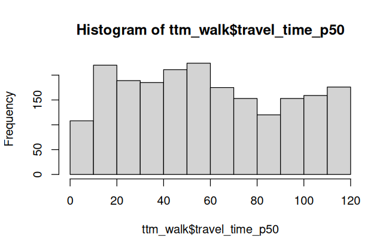
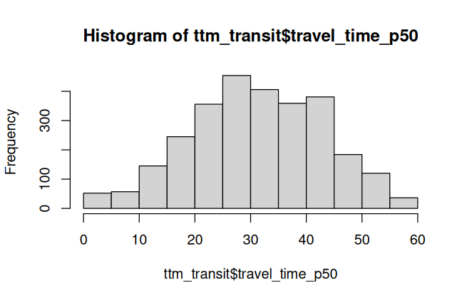
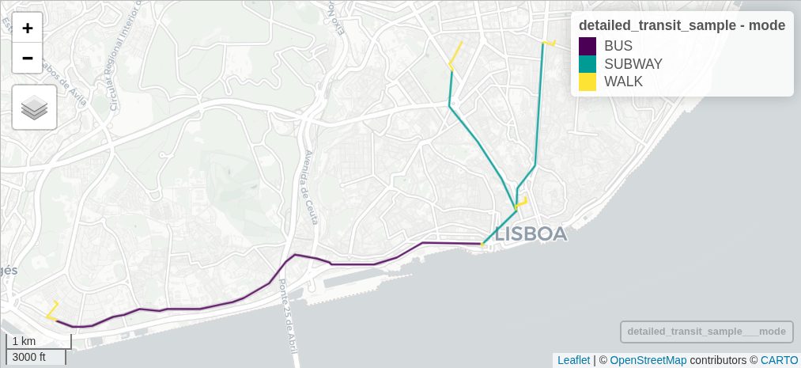
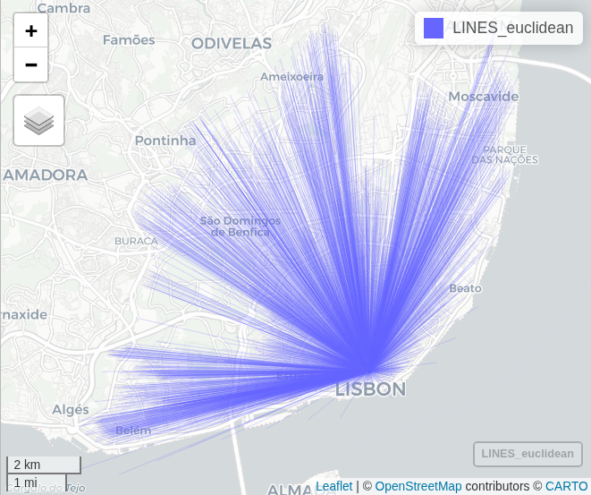
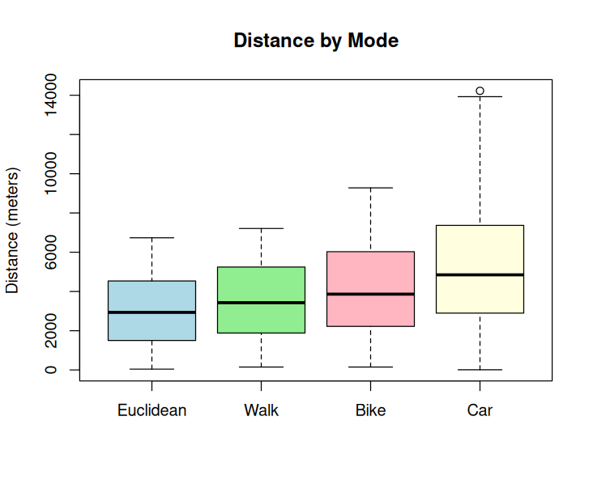
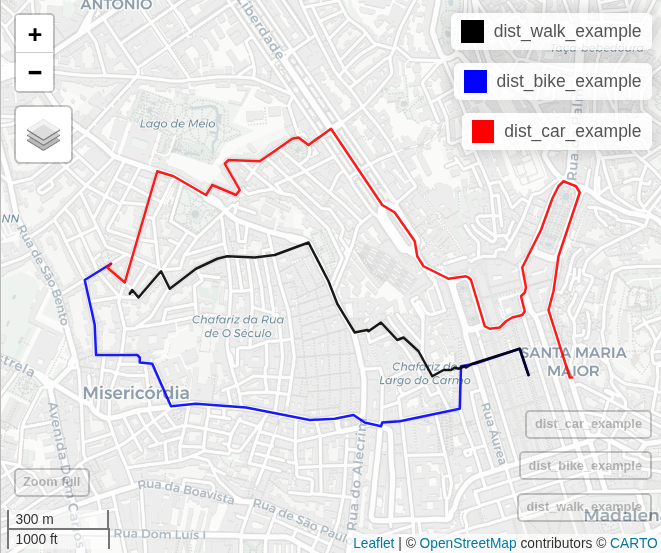
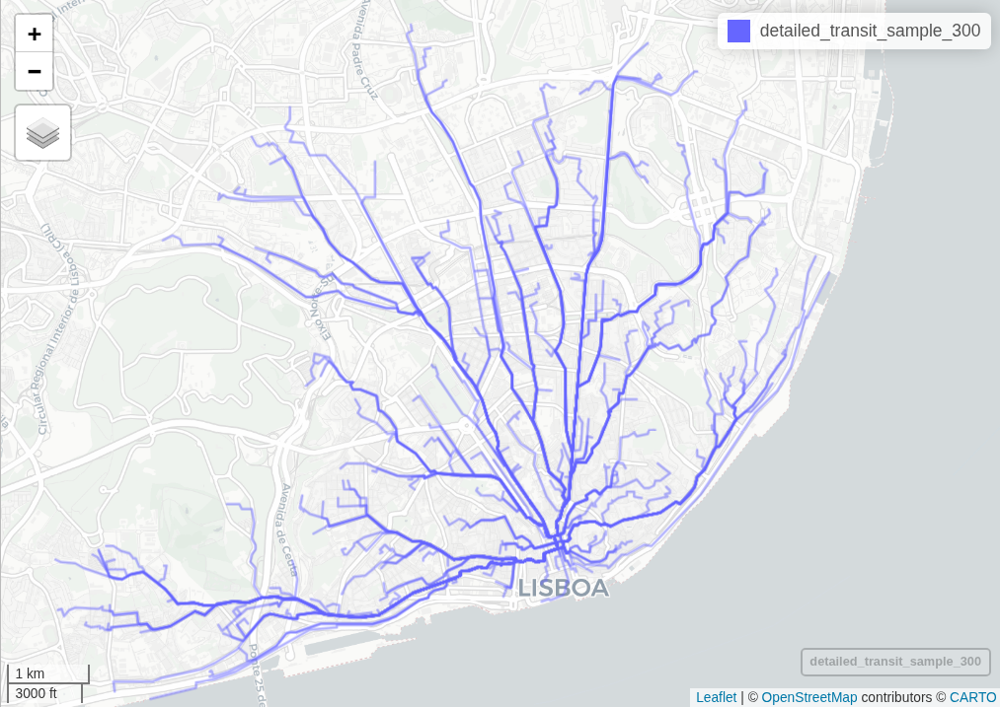
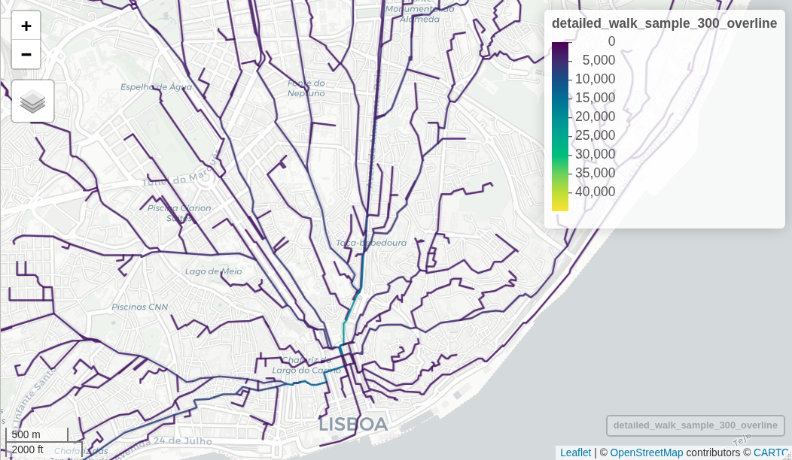

library(sf)
library(mapview)
POINTS = st_read("data/Lisbon/Censos_Lx.gpkg")
nrow(POINTS) # 2822
sum(POINTS$residents) # 545.796Routing
Distances and Times
Origins and Destinations
OD data
If you have travel survey data, for some exercises you may use that one. See also Jittering, if needed.
For all the other, we can simply use census data.
When using census data, for this exercises we can consider all-to-all origins and destinations
With census data, each statistical unit represents ~300 residents. In Lisbon, we have 2822 census units.
Routing between all origins and destinations (2822 x 2822 = 7.963.684 OD pairs) can potentially be a long-duration process. Nothing that r5r wouldn‚Äôt handle! üôÇ
But here we will consider a city_center location, and route our census population to the city center. Search in an online map the coordinates for a point that you would like to consider your attractor.
# Create origin point - Baixa / Downtown
city_center = data.frame(id = "1", lat = 38.711884, lon = -9.137313) |>
st_as_sf(coords = c('lon', 'lat'), crs = 4326)
city_center$lon = st_coordinates(city_center)[,1]
city_center$lat = st_coordinates(city_center)[,2]Travel Time Matrix
# load packages
library(tidyverse)
options(java.parameters = '-Xmx16G') # RAM to 16GB
library(r5r)
# read network
r5r_lisboa = build_network("data/Lisbon/r5r")There are many options to choose from when estimating a travel_time_matrix.
Car
Let’s begin with a uni-modal option: Car, and no time restrictions.
departure_datetime = as.POSIXct("01-10-2025 10:00:00", format = "%d-%m-%Y %H:%M:%S")
ttm_car = travel_time_matrix(r5r_network = r5r_lisboa,
origins = city_center,
destinations = POINTS,
mode = "CAR",
departure_datetime = departure_datetime,
verbose = FALSE)
nrow(ttm_car) # 2822It was super fast to estimate the travel time for 2822 trips!
summary(ttm_car$travel_time_p50)
hist(ttm_car$travel_time_p50) Min. 1st Qu. Median Mean 3rd Qu. Max.
0.00 9.00 12.00 11.41 14.00 26.00 By car, all the 2822 points with residents are able to be reach from city center.
In free-flow, the longest trip takes 26 minutes. 50% of the trips are shorter than 12 minutes.
Walk
Let’s see how it does for walking trips…
ttm_walk = travel_time_matrix(r5r_network = r5r_lisboa,
origins = city_center,
destinations = POINTS,
mode = "WALK",
departure_datetime = departure_datetime,
max_trip_duration = 120, # 2 hours
verbose = FALSE)
nrow(ttm_walk) # 2073
nrow(ttm_walk) / nrow(POINTS) # 73 %
POINTS |>
semi_join(ttm_walk, by = c("id" = "to_id")) |>
pull(residents) |>
sum() # 391.358Only 2073 destinations were able to be reached in the 2h time window (73%), representing 177,466 residents (72%)
Code
summary(ttm_walk$travel_time_p50)
hist(ttm_walk$travel_time_p50) Min. 1st Qu. Median Mean 3rd Qu. Max.
0.00 31.00 56.00 59.13 88.00 120.00 
The longest trip takes 120 minutes (equal to the max travel time). The time distribution is pretty even.
Bike
When considering bike trips, we can also set a maximum level of traffic stress (Mekuria, Furth, and Nixon 2012) that cyclists will tolerate.
LTS
A value of 1 means cyclists will only travel through the quietest streets, while a value of 4 indicates cyclists can travel through any road. Defaults to 2, which can be very restrictive in Lisbon (depends on your case study).
From Pereira et al. (2021):
When cycling is enabled in R5 (by passing the value BIKE to either mode or mode_egress), setting max_lts will allow cycling only on streets with a given level of danger/stress. Setting max_lts to 1, for example, will allow cycling only on separated bicycle infrastructure or low-traffic streets and routing will revert to walking when traversing any links with LTS exceeding 1. Setting max_lts to 3 will allow cycling on links with LTS 1, 2 or 3. Routing also reverts to walking if the street segment is tagged as non-bikable in OSM (e.g. a staircase), independently of the specified max LTS.
The default methodology for assigning LTS values to network edges is based on commonly tagged attributes of OSM ways. See more info about LTS in the original documentation of R5 from Conveyal at https://docs.conveyal.com/learn-more/traffic-stress. In summary:
LTS 1: Tolerable for children. This includes low-speed, low-volume streets, as well as those with separated bicycle facilities (such as parking-protected lanes or cycle tracks).
LTS 2: Tolerable for the mainstream adult population. This includes streets where cyclists have dedicated lanes and only have to interact with traffic at formal crossing.
LTS 3: Tolerable for “enthused and confident” cyclists. This includes streets which may involve close proximity to moderate- or high-speed vehicular traffic.
LTS 4: Tolerable only for “strong and fearless” cyclists. This includes streets where cyclists are required to mix with moderate- to high-speed vehicular traffic.
For advanced users, you can provide custom LTS values by adding a tag <key = "lts"> to the osm.pbf file.
ttm_bike = travel_time_matrix(r5r_network = r5r_lisboa,
origins = city_center,
destinations = POINTS,
mode = "BICYCLE",
max_lts = 3,
departure_datetime = departure_datetime,
max_trip_duration = 60,
verbose = FALSE)
nrow(ttm_bike) # 2751
nrow(ttm_bike) / nrow(POINTS) # 97 %Almost all destinations were able to be reached in the 1h time window (97%).
Code
summary(ttm_bike$travel_time_p50) Min. 1st Qu. Median Mean 3rd Qu. Max.
0.00 16.00 31.00 30.54 46.00 60.00 50% of the trips are shorter than 31 minutes.
Public Transit
When estimating travel time with public transit, some considerations should be provided.
Date and time of the trips
Which modes are allowed? All or just some of PT?
How many transfers are allowed
How to get to the PT stop? By foot, bike or car? The same from the last stop to the destination
How many minutes it is reasonable to walk (of bike) in max during the whole trip?
Is my best time-travel estimate the same, if I consider a 5min time-window period or a 30min time-window period?
Date and time
This is a very relevant parameter (departure_datetime). If your selected date is not part of your GTFS calendar, you will not be able to estimate travel by PT on those dates.
Confirm service calendar
library(tidytransit)
# gtfs_carris = tidytransit::read_gtfs("data/Lisbon/r5r/carris_gtfs.zip")
summary(gtfs_carris)tidygtfs object
files agency, stops, routes, trips, stop_times, calendar, calendar_dates, shapes, transfers
agency Carris
service from 2025-09-01 to 2025-12-01
uses stop_times (no frequencies)
# routes 175
# trips 53028
# stop_ids 2341
# stop_names 1139
# shapes 307My GTFS runs from 2025-09-01 to 2025-12-01. I will select a working day, and a peak hour for this exercises.
departure_datetime = as.POSIXct("01-10-2025 08:00:00", # wednesday
format = "%d-%m-%Y %H:%M:%S")When I change this parameter, my results may be totally different.
Modes
R5 allows for multiple combinations of transport modes. The options include:
Transit modes:
TRAM,SUBWAY,RAIL,BUS,FERRY,CABLE_CAR,GONDOLA,FUNICULAR.
The optionTRANSITautomatically considers all public transport modes available.Non transit modes:
WALK,BICYCLE,CAR,BICYCLE_RENT,CAR_PARK.
Transfers
The maximum number of public transport rides allowed in the same trip. The max_rides defaults to 3. Consider a plausible number, and take into consideration that shifting from one metro line to other will be considered as 2 rides.
Egress mode and max walk time
The transport mode used after egress from the last public transport.
It can be either WALK, BICYCLE or CAR.
Defaults to WALK. Ignored when public transport is not used.
The max_walk_time (or bike or car) time (in minutes) to access and egress the transit network, to make transfers within the network or to complete walk-only trips.
When routing transit trips, the max time is considered separately for each leg (e.g. if you set max_walk_time to 15, you could get trips with an up to 15 minutes walk leg to reach transit and another up to 15 minutes walk leg to reach the destination after leaving transit.
Time window
To calculate the travel time from A to B, or to calculate the accessibility level at a given location, one has to select a departure time.
Even a small difference, say leaving at 10:00am or 10:04am might importantly change travel time and accessibility estimates depending on when a person departs relative to when a public transport vehicle arrives, and how well transfers are coordinated given a service timetable.
When time_window is set, R5 computes multiple travel times / accessibility estimates starting at the specified departure_datetime and within the time_window selected by the user. By default, r5r will generate one estimate per minute.
By default, r5r results have the 50th percentile of travel time.
See more in time_window (Pereira et al. 2021).
Let’s see an example:
ttm_transit = travel_time_matrix(
r5r_network = r5r_lisboa,
origins = city_center,
destinations = POINTS,
mode = "TRANSIT", # or BUS or SUBWAY or RAIL or FERRY only
# mode = c("SUBWAY", "BUS") # the same as above
mode_egress = "WALK",
departure_datetime = departure_datetime,
max_rides = 3, # 2 transfers
# time_window = 10, # the default
max_walk_time = 15,
max_trip_duration = 60,
verbose = FALSE
)
nrow(ttm_transit) # 2795
nrow(ttm_transit) / nrow(POINTS) # 99 %
POINTS |>
semi_join(ttm_transit, by = c("id" = "to_id")) |>
pull(residents) |>
sum() # 269.539Almost all destinations were able to be reached in the 1h time window (99%).
Code
summary(ttm_transit$travel_time_p50) Min. 1st Qu. Median Mean 3rd Qu. Max.
0.00 24.00 31.00 31.63 41.00 59.00 
50% of the trips take less than 31 minutes. The distribution is pretty normal.
Try to change some parameters, such as the max_rides or the max_trip_duration and compare the results.
Detailed itineraries
With the detailed_itineraries(), we can extract more information about each trip, such as:
Which modes were used for trip x? In which order?
What is the duration for each leg?
Which route (shape) was estimated?
This function is also pretty flexible and allows to see more details. Also, because of this, it may require some more processing cost.
Multi-modal legs
Using the same parameters as the ttm_transit, let’s see more details
detailed_transit = detailed_itineraries(
r5r_network = r5r_lisboa,
origins = city_center,
destinations = POINTS,
mode = "TRANSIT",
mode_egress = "WALK",
departure_datetime = departure_datetime,
max_rides = 2, # 1 transfers
# time_window = 10, # the default
max_walk_time = 30,
max_trip_duration = 60,
drop_geometry = TRUE, # no geometry this time (processig time)
verbose = FALSE
)
table(detailed_transit$mode)
View(detailed_transit) BUS SUBWAY WALK
1653 2646 7058 from_id from_lat from_lon to_id to_lat to_lon option departure_time total_duration total_distance segment mode
<char> <num> <num> <char> <num> <num> <int> <char> <num> <int> <int> <char>
1: 1 38.71188 -9.137313 1 38.73367 -9.131977 1 08:07:58 16.4 3241 1 WALK
2: 1 38.71188 -9.137313 1 38.73367 -9.131977 1 08:07:58 16.4 3241 2 SUBWAY
3: 1 38.71188 -9.137313 1 38.73367 -9.131977 1 08:07:58 16.4 3241 3 WALK
4: 1 38.71188 -9.137313 2 38.73378 -9.147983 1 08:07:58 19.7 3297 1 WALK
5: 1 38.71188 -9.137313 2 38.73378 -9.147983 1 08:07:58 19.7 3297 2 SUBWAY
6: 1 38.71188 -9.137313 2 38.73378 -9.147983 1 08:07:58 19.7 3297 3 WALK
7: 1 38.71188 -9.137313 3 38.69891 -9.219046 1 08:04:02 52.1 8471 1 WALK
8: 1 38.71188 -9.137313 3 38.69891 -9.219046 1 08:04:02 52.1 8471 2 SUBWAY
9: 1 38.71188 -9.137313 3 38.69891 -9.219046 1 08:04:02 52.1 8471 3 WALK
10: 1 38.71188 -9.137313 3 38.69891 -9.219046 1 08:04:02 52.1 8471 4 BUS
11: 1 38.71188 -9.137313 3 38.69891 -9.219046 1 08:04:02 52.1 8471
segment_duration wait distance route
<num> <num> <int> <char>
1: 4.5 0.0 343
2: 5.9 1.5 2640 C
3: 4.5 0.0 258
4: 4.5 0.0 343
5: 5.1 1.1 2429 A
6: 9.0 0.0 525
7: 4.5 0.0 343
8: 1.3 1.5 719 C
9: 1.6 0.0 109
10: 32.0 3.1 6821 76_0
11: 8.1 0.0 479 Route shapes
Let’s see in detail the first 3 OD pairs:
detailed_transit_sample = detailed_itineraries(
r5r_network = r5r_lisboa,
origins = city_center,
destinations = POINTS[c(1:3),], # only the first 3 points
mode = "TRANSIT",
mode_egress = "WALK",
departure_datetime = departure_datetime,
max_rides = 2, # 1 transfers
# time_window = 10, # the default
max_walk_time = 30,
max_trip_duration = 60,
# drop_geometry = TRUE, # no geometry this time (processig time)
verbose = FALSE,
progress = TRUE
)
mapview(detailed_transit_sample, zcol = "mode")
Click on each segment to analyse the details, in particular the segment duration and distance, the waiting time, the leg order, and the transit route number / name.
Circuity
Circuity measures how direct or indirect a travel route is compared to the straight-line (Euclidean) distance between an origin and a destination. It reflects the efficiency of the transport network in providing direct connections.
The circuity index (C) measures how indirect a route is compared to the straight-line distance between an origin and a destination, and is defined as:
\[ C = \frac{d_{\text{network}}}{d_{\text{euclidean}}} \]
where:
- (d_{}) — distance or travel length along the actual transport network
- (d_{}) — straight-line (Euclidean) distance between the same points
A circuity value of 1 indicates a perfectly direct route (as the crow flies), while higher values indicate more detoured paths due to network layout, barriers, or design.
In this exercise, circuity will be estimated separately for car, walking, cycling, and public transport networks, allowing comparison of how each mode’s infrastructure shapes travel efficiency and accessibility.
Euclidean distances
First we will create lines connecting the survey locations to the university, using the st_nearest_points() function. This function finds returns the nearest points between two geometries, and creates a line between them.
dist_euclidean = st_nearest_points(POINTS, BAIXA, pairwise = TRUE) |>
st_as_sf() # this creates lines
mapview(dist_euclidean, lwd = 0.2)
Now we can estimate the distance using the st_length() function.
# compute the line length
dist_euclidean = POINTS |>
mutate(distance = st_length(dist_euclidean) |> units::drop_units() |> round()) |>
st_drop_geometry() # not needed Min. 1st Qu. Median Mean 3rd Qu. Max.
41 2071 3962 4178 6385 9814 Routing by mode
We will process only for the walk, car and bike routes.
# Walk
dist_walk = detailed_itineraries(
r5r_network = r5r_lisboa,
origins = city_center,
destinations = POINTS,
mode = "WALK",
drop_geometry = TRUE
)
# Car
dist_car = detailed_itineraries(
r5r_network = r5r_lisboa,
origins = city_center,
destinations = POINTS,
mode = "CAR",
drop_geometry = TRUE
)
# Bike
dist_bike = detailed_itineraries(
r5r_network = r5r_lisboa,
origins = city_center,
destinations = POINTS,
mode = "BICYCLE",
max_lts = 3,
drop_geometry = TRUE
)Compare distances
We can compare all the distances for trips under 2h.
Code
DISTANCES = dist_euclidean |>
left_join(dist_walk |>
select(to_id, total_distance) |>
rename(walk_dist = total_distance,
id = to_id)) |>
left_join(dist_car |>
select(to_id, total_distance) |>
rename(car_dist = total_distance,
id = to_id)) |>
left_join(dist_bike |>
select(to_id, total_distance) |>
rename(bike_dist = total_distance,
id = to_id))
DISTANCES = DISTANCES |>
mutate(circ_walk = walk_dist / distance,
circ_car = car_dist / distance,
circ_bike = bike_dist / distance)> summary(DISTANCES$circ_walk)
Min. 1st Qu. Median Mean 3rd Qu. Max. NA's
1.018 1.131 1.186 1.252 1.302 4.024 757
> summary(DISTANCES$circ_car)
Min. 1st Qu. Median Mean 3rd Qu. Max. NA's
0.04975 1.36537 1.59976 1.90545 1.96105 51.04878 3
> summary(DISTANCES$circ_bike)
Min. 1st Qu. Median Mean 3rd Qu. Max. NA's
1.059 1.252 1.320 1.383 1.446 4.780 1 - Circuity >1 indicates that network routes are longer than straight-line distances.
Code
data2 = DISTANCES |>
select(distance, walk_dist, bike_dist, car_dist) |>
na.omit() # remove the ones that were not estimated for all modes
boxplot(data2, main="Distance by Mode",
ylab="Distance (meters)",
col=c("lightblue", "lightgreen", "lightpink", "lightyellow"),
names=c("Euclidean", "Walk", "Bike", "Car"))
Let’s visualize for one example
# id = 1594
# Walk
dist_walk_example = detailed_itineraries(
r5r_network = r5r_lisboa,
origins = city_center,
destinations = POINTS[1594,],
mode = "WALK"
)
# Car
dist_car_example = detailed_itineraries(
r5r_network = r5r_lisboa,
origins = city_center,
destinations = POINTS[1594,],
mode = "CAR"
)
# Bike
dist_bike_example = detailed_itineraries(
r5r_network = r5r_lisboa,
origins = city_center,
destinations = POINTS[1594,],
mode = "BICYCLE",
max_lts = 3
)
mapview(dist_walk_example, color = "black") + # 984 meters
mapview(dist_bike_example, color = "blue") + # 1262 meters
mapview(dist_car_example, color = "red") # 3161 meters
Overline
We can add population or other information to the routes, to visualize which ones could potentially have more demand.
For that, I’ll run the process for 300 random destinations, by WALK:
detailed_walk_sample_300 = detailed_itineraries(
r5r_network = r5r_lisboa,
origins = city_center,
destinations = POINTS |> sample_n(300), # 300 sample
mode = "WALK",
# drop_geometry = TRUE, # no geometry this time (processig time)
verbose = FALSE,
progress = TRUE
)
View(detailed_transit_sample_300)
mapview(detailed_transit_sample_300, alpha = 0.5)
Now, join this information with the population
detailed_walk_sample_300 = detailed_walk_sample_300 |>
left_join(POINTS |> st_drop_geometry(), # can't be an sf
by = c("to_id" = "id"))Let’s overline all the linestrings, by adding the “residents” variable (Lovelace and Ellison 2018)
library(stplanr)
detailed_walk_sample_300_overline = detailed_walk_sample_300 |>
overline2(attrib = "residents",
fun = sum)
summary(detailed_walk_sample_300_overline$residents)
mapview(detailed_walk_sample_300_overline)
Note
Note the odd lines and the route choices.
Wrap up
In this tutorial, we explored how to use the r5r package to estimate travel distances and times across multiple transport modes — car, walking, cycling, and public transit — using a muti-modal network model.
We learned to:
Load and prepare origin–destination (OD) data from census units.
Build and use an R5 multimodal transport network.
Compute travel time matrices for different modes and interpret their outputs.
Adjust routing parameters such as:
departure_datetimemax_trip_durationmax_lts(Level of Traffic Stress)max_rides,mode_egress, andmax_walk_timefor public transport
Extract detailed itineraries with
detailed_itineraries()to understand trip segments, modes, distances, and durations.Compare Euclidean and network distances, and compute circuity to quantify the efficiency of different travel modes
Finally, we visualized and aggregated routes using stplanr::overline(), combining spatial and population data to identify segments with potentially higher travel demand.
Stop
r5r objects are still allocated to any amount of memory previously set after they are done with their calculations. In order to remove an existing r5r object and reallocate the memory it had been using, we use the stop_r5 function followed by a call to Java’s garbage collector, as follows:
r5r::stop_r5(r5r_lisboa)
rJava::.jgc(R.gc = TRUE)References
Lovelace, Robin, and Richard Ellison. 2018. “Stplanr: A Package for Transport Planning.” The R Journal 10 (2): 10. https://doi.org/10.32614/RJ-2018-053.
Mekuria, Maaza C, Peter G Furth, and Hilary Nixon. 2012. “Low-Stress Bicycling and Network Connectivity.” https://transweb.sjsu.edu/research/Low-Stress-Bicycling-and-Network-Connectivity.
Pereira, Rafael H. M., Marcus Saraiva, Daniel Herszenhut, Carlos Kaue Vieira Braga, and Matthew Wigginton Conway. 2021. “R5r: Rapid Realistic Routing on Multimodal Transport Networks with r5 in r.” Findings, March. https://doi.org/10.32866/001c.21262.